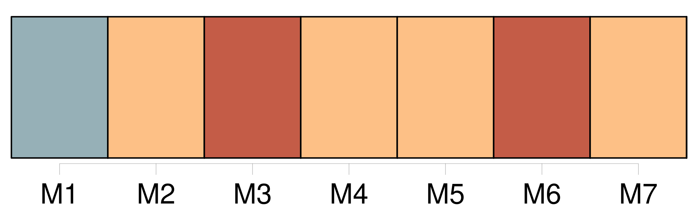
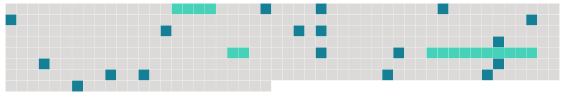

Longueur nb maillons : 21 mentions |
 |
Comme tout le monde, victimes de diables qui ne laissent pas de marge aux [plus simples vagabonds humains] Des voix qui [les] amollissaient au milieu de [leurs] tâches, comme le vent du mois de mars, [leur] ordonnaient d'aller à la rencontre des événements, de [les] mettre au défi de toujours échapper. [1 phrases] Il y a des routes, des ports, des gares, d'autres pays que [leur] chenil : il suffit un jour de ne pas descendre à sa station de métro. [Ils] savaient cela avec une précision plus ou moins éclairée, mais [ils] étaient [tous] de la même bande honteuse qui connaît son état de disette quand elle sort de son travail éternel. [2 phrases] Alors [ils] partaient vers des accidents obscurs, que personne ne prévoyait, plus merveilleux que des comètes, en l'an 1000, et qui feraient [d'eux] des hommes.
Tout ce qu' [ils] voyaient bien était les manques de [leur] vie, [leur agitation d'ombres en proie à d'horribles humiliations] Il était temps pour [eux] , il allait être trop tard, d'ouvrir des yeux capables de voir le monde, de mettre la main sur un animal charnel, sur des objets à trois dimensions, de vivre soudain une telle journée qu' [ils] seraient assurés que la vie en général n'est pas le songe irrémédiable de [leurs] déserts.
[Ils] se dirigeaient à tâtons, vers une découverte, une invention substantielle, comme celle de la sainte Croix, qu' [ils] ne désiraient même pas clairement, parce qu' [ils] s'étaient toujours endormis, éveillés dans une ombre si noire que [leurs] désirs n'étaient pas nommés, comme un couteau, comme un chien, comme Dieu. |
 |
Il est possible de télécharger la ressource sur la page Ortolang |
Si vous avez des questions ou vous voyez des erreurs, merci d'envoyer un mail à silvia.federzoni89@gmail.com |